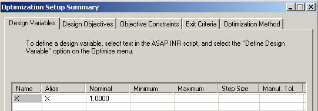

This topic describes how to set up ASAP before you can initiate an optimization in the optimization user interface. It describes the connection between the script (INR) and the optimization user interface, which is the Optimization Setup Summary window.
An INR file that contains optimization elements such as a scalar real variable must be open in the Editor window.
-
Select the Optimize Script command from the Editor menu
on the ASAP toolbar.
Results:- The Optimization Setup Summary
icon,
 is added
on the taskbar in Windows. At this point, no values have been entered.
The window can be minimized. If it is closed, the optimization session
ends.
is added
on the taskbar in Windows. At this point, no values have been entered.
The window can be minimized. If it is closed, the optimization session
ends. 
- The Optimized menu on the ASAP main toolbar is displayed.
- INR file becomes read-only, and the text changes from color to gray.
- The INR file name in the title
bar of the Editor has "optimized" appended to it.
- You can now begin adding your design variables, design objectives, and, optionally, objective constraints and penalty functions.
- The Optimization Setup Summary
icon,
-
Select text in the INR script that contains optimization elements such as a
scalar real variable (in the form name=value, where
value is a constant) or an expression.
- Select Define Design Variable from the from the context menu by right-clicking the Editor window, or from the Optimize menu.

If the selected text is a valid expression that can be evaluated as a variable, objective, constraint, or penalty function, the name and value are placed on the appropriate tab on the Optimization Setup Summary window.
-
After you meet the requirement of defining at least one design variable and one
design objective, confirm they are enabled on the applicable tabs of the
Optimization Setup Summary window, if you want to use them in the current
optimization.

-
Optionally, define objective constraints or penalty functions.
-
To define a constraint, select a constraint from the script, and select
Define Objective Constraint from either the
Optimize menu or from the context menu by right-clicking the Editor
window.

-
To define a penalty function for a constraint, select a penalty
function from the script, and select Define Penalty
Function from the context menu by right-clicking the Editor
window, or from the Optimize menu.

-
To assign a penalty function to a constraint, select one from
the drop-down menu in the Penalty Functions column on the Objective
Constraints tab, or to remove one, select No Penalty Function
Assigned.
-
If you want to use an objective constraint in the current optimization,
confirm that the desired objective constraint is enabled on the
Objective Constraints tab.
-
To define a constraint, select a constraint from the script, and select
Define Objective Constraint from either the
Optimize menu or from the context menu by right-clicking the Editor
window.
-
Select the exit criteria and complete any associated fields on the Exit
Criteria tab of the Setup Summary window.

-
Select an optimization method, enter a title, and complete any associated
fields for the selected method.

Note: For example, if you select only one design variable, or have deleted defined variables so that only one remains, only Brent 's method is available as the optimization method. If you define a second design variable, ASAP automatically changes the optimization method to Downhill Simplex, which is the default optimization method. You can change the optimization method to Simulated Annealing (the only other valid choice for two or more design variables) if this method is your preference.